ZZALOG
Logging Application
User Guide
v3.6.1-rc1 16h July 2025
ZZALOG is a logging application that provides the following functionality:
Records QSOs in a logging database.
Allows the database to be searched.
Allows the real-time and off-line entry of QSO records.
Allows the user to monitor “worked-before” status in real-time.
Exchanges data with QSL web-sites such as eQSL.cc and Logbook of the World.
Tracks the status of electronic and paper QSL cards and displaying images of received cards.
Includes: a shack clock; weather report and band plan view.
Interfaces with a number of modem applications (WSJT-X, FLDIGI etc).
ZZALOG maintains the QSO records in the ADIF .adi format. This allows manual editing, if done carefully. ZZALOG may not be tolerant of error introduced by manual editing.
Although ADIF .adi format does not support the use of non-ASCII character sets, ZZALOG provides support for all Unicode characters coded in UTF-8 format. Exchange of such data with other applications may result in errors.
This document can be opened at any time from the menu:
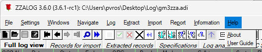
Illustration
1: Opening this document from the menu
Table of Contents
Introduction 2
Installation 3
Quick-start Guide 3
Starting ZZALOG 3
Operating 7
Connecting to a rig. 7
Operating 8
Logging the QSO 10
Detailed User Guide 11
Installation can currently only be done on an ad-hoc basis. This document currently assumes that installation has already been done by the application's author.
The application has been compiled for Windows and Linux environments.
On Windows, ZZALOG may be started by double clicking on the icon. It may also be started from a terminal by advanced users.
On starting, a banner window is displayed:
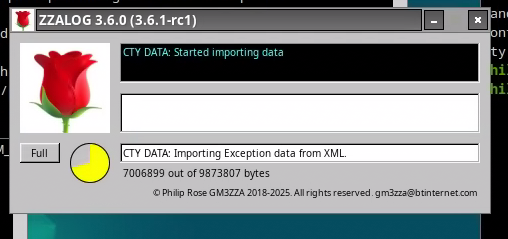
Illustration
2: Banner
Illustration 2: Banner shows the progress of the application as it is loading all the data needed to run. This window shows the latest message output, the latest error message output and the progress of each stage. In the above image, the application is reading in the latest callsign parsing information file and the banner shows the progress in numerical form and in a clock dial form. The “Full” button, when clicked, expands the display to show a scrollable output of all the messages output.
Once ZZALOG has loaded then two or three more windows are displayed. Firstly there is a log-book style view of the log data:
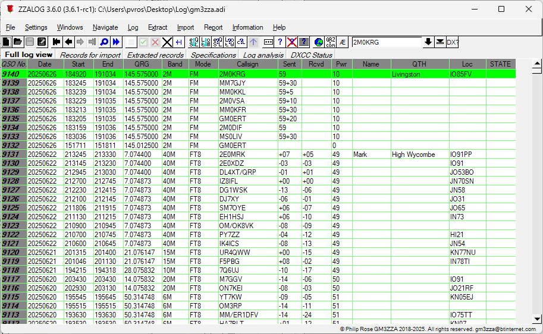
Illustration
3: Log-book view
In Illustration 3: Log-book view a section of the log-book showing the most recent entries is displayed. In this view the data that is presented can be configured by selecting different fields to be displayed. The data can be displayed either in chronological order or in reverse chronological order. More information about this window is provided in Detailed User Guide below.
Secondly, a dashboard view is available: in Illustration 4: Dashboard view ZZALOG provides the user with the ability to enter new QSOs, edit existing QSOs, browse the log and manage all the data exchange functionality. Briefly, the various panes in this window show:
“Station” - Location, operator and callsign of current operation.
“QSO Entry” - Viewing and editing pane for QSO records. In come operations this is replaced by a “QSO Query” or “QSO Browse” view.
“Previous” - Displays any previous QSOs with the entered callsign.
“DX?” - Shows the “worked-before” status of the DXCC entity etc.
“QSL” - Displays the QSL status for this QSO – including displaying any card image.
“Contest” - Is used for contest operating.
“Controls” - Displays all the operations available in the current state.
“Rigs” - Displays the status of any connected rigs.
“Clocks” - Displays the time in UTC (GMT or Zulu) and local time.
“Log” - Displays the current status of the file.
“QSLs” - Allows the control of data exchange with on-line QSL services.
“Apps” - Provides control of other applications such as digital modems.
“WX” - Displays the local weather obtained from openweather.org.
“Bandplan” - Displays the local bandplan information.
More details for each pane is provided in Detailed User Guide below.
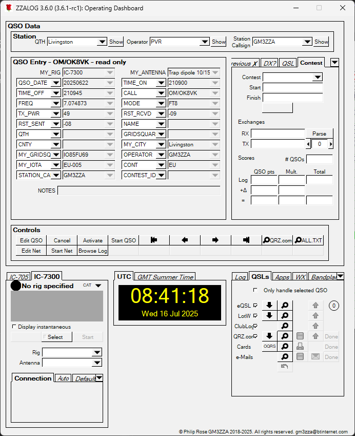
Illustration
4: Dashboard view
More detail of each pane is provided later.
Finally, if ZZALOG is so configured, a third window is displayed. This is used, for example, for a club operation where the information about individual operators is required:
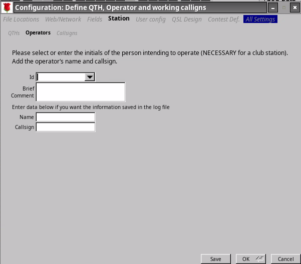
Illustration
5: Operator selection
In Illustration 5: Operator selection the user is being asked to identify themselves. The field labeled “Id” has a drop-down menu so that the user can select themselves or if not listed type in their initials (or callsign suffix). The user can then enter their name and callsign if mandated by the station policy. In Illustration 6: Filled in operator details below this information has been filled in.
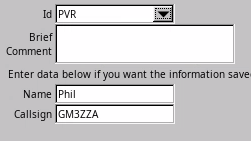
Illustration
6: Filled in operator details
To start operating we shall need to connect to a rig.
ZZALOG uses the hamlib library for its rig connectivity. The hamlib library is an suite of procedure calls that provides a common interface for most rigs' CAT interfaces. It can also interface with a number of other applications that provide access to rigs' CAT interfaces. Most CAT interfaces use some form of serial interface, and shared access to a serial interface by different applications (such as ZZALOG and any digital modem applications – PSK, FT8, SSTV etc) requires another helper application such as flrig.
ZZALOG can provide a means of starting this helper application, which requires the use of scripts. The rest of this section assumes that Flrig has been launched.
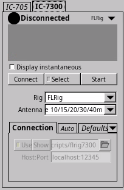
Illustration
7: Rig control
In the bottom left of the dashboard is Illustration 7: Rig control screen. The user should select the rig that they are interested in. In this case an ICOM IC-7300. The “Start” button will lunch a script, if written, to open up the FLRig application. The “Select” button allows configuration of the interface. These two features will be described is provided in Detailed User Guide below.
Assuming that FLRig has been launched then clicking the “Connect” button will connect to that application. Illustration 8: FLRig connected shows ZZALOG connected to FLRig and the latter's display alongside. ZZALOG is showing the same frequency, mode, TX power and S-meter reading as FLRig, and as the rig itself. ZZALOG will normally show the highest S-meter and TX power meter readings over the most recent few polls of the rig, and retain the last S-meter reading from a RX period and the last TX Power reading from a TX period.
Note that the “Connect” button has become a “Disconnect” button.
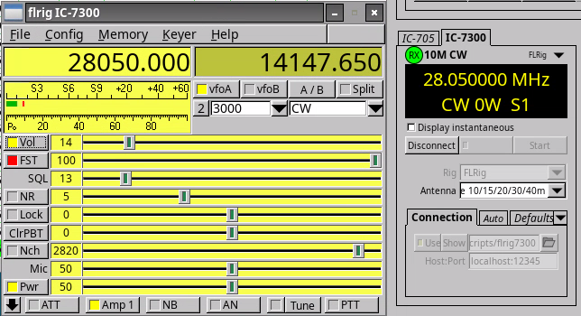
Illustration
8: FLRig connected
To operate, the user must place ZZALOG into the correct mode. This is achieved by clicking the “Activate” button on the “Controls” section – see Illustration 4: Dashboard view. This changes the “QSO Entry” section:
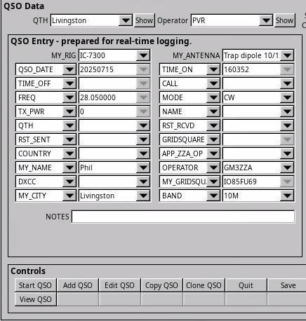
Illustration
9: Dashboard ready for operation (“Active”)
Illustration 9: Dashboard ready for operation (“Active”) shows the “QSO Entry” section ready for entry. All the fields shown may be swapped for other fields by selecting the drop-down arrow alongside each. Each field has an associated data entry widget: for some of these the drop-down arrow opens up a menu of possible values:
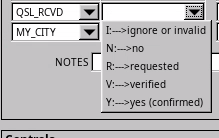
Illustration
10: Menu of choices
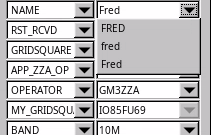
Illustration
11: Menu of formats
Illustration 10: Menu of choices and Illustration 11: Menu of formats show examples of this selection.
At this point it is also possible to check on the “worked-before” status of a call. Typing in a callsign that has been copied will result in that call being checked against the history contained in the log. Examples are below:
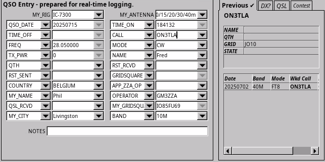
Illustration
12: Checking "worked-before" status for a call
Illustration 12: Checking "worked-before" status for a call shows the callsign being checked. In this case the station has been worked before but not on the band on the rig (10m – whereas they were worked before on 40m) or on the mode (FT8 versus CW).
Illustration 13: Checking "worked-before" status for a DXCC entity shows the call being decoded as in DXCC Suriname, continent SA (South America) and CQ Zone 9. All three of these have been worked before, but this shows that Suriname is a new DXCC on 10m and also on CW. Similarly for CQ Zone 9. South America has been worked on 10m but is a new continent on CW. As the Locator (Gridsquare) information has not been supplied, it cannot be checked.
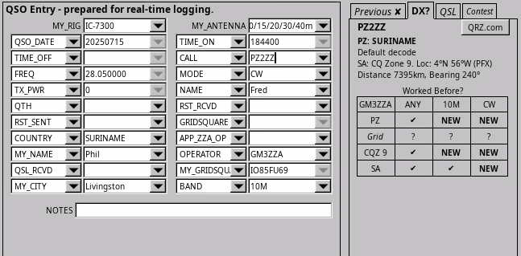
Illustration
13: Checking "worked-before" status for a DXCC entity
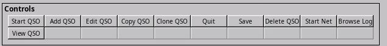
Illustration
14: Commands in "Active" state
In the “Active” state the commands available are:
“Start QSO” - moves ZZALOG to “Enter QSO” state with any details already typed in are kept.
“Add QSO” - will start logging a QSO that has already occurred.
“Edit QSO” - will enable editing a QSO that has already been logged.
“Delete QSO” - will remove the QSO from the log.
“View QSO” - will open the selected QSO for viewing – and checking DXCC status etc.
Clicking “Start QSO” will cause the QSO date and time and the information obtained from the rig to become fixed. It also makes a new set of commands available:
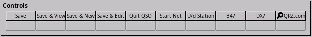
Illustration
15: Commands in "Enter QSO" state
“Save” - completes the logging, by setting TIME_OFF field and reverts to “Active” state.
“Save & View” - saves the logging, and keeps the QSO open for viewing.
“Save & New” - saves the logging, and starts a new QSO.
“Save & Edit” - saves the logging, but keeps the QSO in edit mode for further updates.
“Quit QSO” - cancels the logging and removes the QSO from the log.